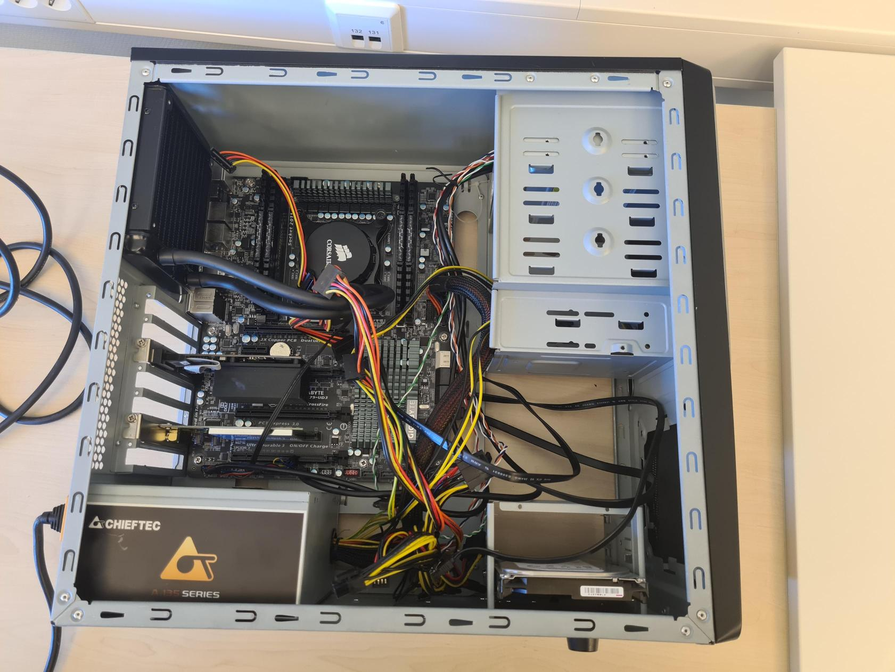

Teknologiforståelse
Om teknologiforståelse:
Teknologiforståelse er et fag som handler om hvordan ting rundt oss fungerer, som PC-er eller 5G. Teknologiforståelse er et av fagene jeg liker godt, fordi jeg er nysjerrig om hvordan ting skjer rundt oss.
Hva vi har gjort:
I teknologiforståelse har vi lært om Office-pakka, Internett, HMS, Domener, Binære og heksadesimale tall, Bit og Byte, Rutere, Kommandoer og PC-er. Når vi har drevet med PC-er, har vi drevet med forskjellige ting innerfor det temaet, som Hardware, Software, Operativsystemer og Raspberry Pi.
Blant disse syntes jeg at PC-er, Internett og Raspberry Pi har vært det mest spennende.
Hva jeg er stolt av:
Tverrfaglig oppgave
Dette var en oppgave som vi drev med i medieproduksjon og i teknologiforståelse. I denne oppgaven fikk vi selv lov til å velge et proskjekt vi skulle jobbe på. Vi skulle bruke alle teknologiforståelse og alle medieproduksjon-timene i 2 og en halv uker. I dette proskjektet kunne man velge hvilken som helst oppgave man ville, men helst noe som bruker Raspberry Pi. Jeg brukte denne tiden på å lage et ratt som kan brukes i datamaskin-spill, og underveis møtte jeg på flere utfordringer som gjorde at hele prosjektet ble vanskeligere enn jeg først trodde.
Carlos var veldig fornøyd med dette prosjektet, siden han tidligere hadde prøvd å finne noe liknende på internett som fungerte som rattet mitt gjorde.
Bilde av prosjektet:
Gammel lab-PC
I dette prosjektet jobbet vi i en uke med en gammel lab-PC med gamle deler som vi skulle få til å fungere. Jeg jobbet sammen med Andy, og vi var en av de få gruppene som faktisk fikk PC-en vår til å fungere. Etter at vi fikk den til å fungere, lagde vi en rapport om det vi gjorde med PC-en for å få den til å fungere.
Bilde av PC-en:
